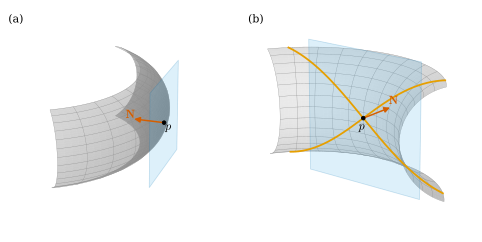

8.5 국소좌표 공식
이 절의 목표
- 제2기본형식의 계수 \(L, M, N\)을 정의하고, 매개화를 바꿀 때 어떻게 변하는지 설명할 수 있다.
- 바인가르텐 방정식(형태작용소의 행렬 \(=\) 제1기본형식 행렬의 역행렬 \(\times\) 제2기본형식 행렬)을 유도할 수 있다.
- \(K = (LN - M^2)/(EG - F^2)\)와 \(H\)의 공식을 유도하고, 구면·원기둥·원환면·회전면·그래프 곡면·안장면에서 계산할 수 있다.
- 타원점 근처의 곡면은 접평면의 한쪽에 있고 쌍곡점 근처의 곡면은 양쪽에 걸침을 증명할 수 있다.
선수 지식
동기
8.4절까지는 단위법벡터 \(\mathbf{N} \circ \mathbf{x}\)를 직접 미분해서 형태작용소를 구했다. \(\mathbf{N}\)에는 \(\abs{\mathbf{x}_u \times \mathbf{x}_v}\)로 나누는 제곱근이 들어 있어서, 안장면의 한 점(예 8.1.11)만 해도 계산이 번거로웠다. 그런데 정리 8.1.10의 증명에서 \(\inner{\mathbf{N}_u}{\mathbf{x}_v} = -\inner{\mathbf{N}}{\mathbf{x}_{uv}}\)를 보았다. \(\mathbf{N}\)의 도함수 대신 매개화의 이계도함수와 \(\mathbf{N}\) 자신의 내적으로 쓸 수 있다는 뜻이다.
이 절은 그 관찰을 체계로 만든다. 제1기본형식이 세 수 \(E, F, G\)로 적히듯이 제2기본형식도 세 수 \(L, M, N\)으로 적힌다. 여섯 수가 있으면 형태작용소의 행렬, 주곡률, \(K\), \(H\)가 모두 나온다. 이 공식들은 9장에서 빼어난 정리를 증명하는 재료가 된다.

제2기본형식의 계수
이 절에서 \(\mathbf{x}\colon U \to S\)는 매개화이고, 따로 말하지 않으면 \(\mathbf{x}(U)\) 위에서 \(\mathbf{N} = \mathbf{N}_{\mathbf{x}} = (\mathbf{x}_u \times \mathbf{x}_v)/\abs{\mathbf{x}_u \times \mathbf{x}_v}\)를 쓴다. \(\mathbf{N}\)이 다른 단위법벡터장이면 명제 7.5.3(c)에 의해 연결인 \(U\) 위에서 \(\mathbf{N} = \pm\mathbf{N}_{\mathbf{x}}\)이고, 아래의 계수와 \(H\)의 부호만 바뀐다.
정의 8.5.1 (제2기본형식의 계수, coefficients of the second fundamental form). \(U\) 위의 함수
를 매개화 \(\mathbf{x}\)(와 \(\mathbf{N}\))에 대한 제2기본형식의 계수라 한다. 인덱스로는 \(h_{11} = L\), \(h_{12} = h_{21} = M\), \(h_{22} = N\), 곧 \(h_{ij} = \inner{\mathbf{x}_{ij}}{\mathbf{N}}\)이다.
명제 8.5.2 (제2기본형식의 좌표 표현). \(\mathbf{N}_u = (\mathbf{N} \circ \mathbf{x})_u\), \(\mathbf{N}_v = (\mathbf{N} \circ \mathbf{x})_v\)라 하면
이다. 따라서 \(w = a\,\mathbf{x}_u + b\,\mathbf{x}_v\)이면
이다. 곧 \(\begin{pmatrix} L & M \\ M & N \end{pmatrix}\)은 쌍선형형식 \(\mathrm{II}\)의 기저 \((\mathbf{x}_u, \mathbf{x}_v)\)에 대한 행렬이다(식 (7.1.2)의 제2기본형식판).
증명. \(\inner{\mathbf{N}}{\mathbf{x}_u} = 0\)을 \(u\)로 미분하면 \(\inner{\mathbf{N}_u}{\mathbf{x}_u} + \inner{\mathbf{N}}{\mathbf{x}_{uu}} = 0\)이므로 \(L = -\inner{\mathbf{N}_u}{\mathbf{x}_u}\)이다. \(N\)도 같고, \(M\)은 (8.1.4)이다. (8.1.2)에서 \(\mathbf{N}_u = d\mathbf{N}(\mathbf{x}_u) = -W(\mathbf{x}_u)\)이므로 \(-\inner{\mathbf{N}_u}{\mathbf{x}_u} = \inner{W(\mathbf{x}_u)}{\mathbf{x}_u} = \mathrm{II}(\mathbf{x}_u)\)이고, 나머지도 같다. (8.5.3)은 쌍선형성으로 전개한 것이다.
둘째 표현 \(\inner{\mathbf{x}_{uu}}{\mathbf{N}}\)은 명제 8.2.3의 곡선판이기도 하다. 좌표곡선 \(u \mapsto \mathbf{x}(u, v)\)의 가속도는 \(\mathbf{x}_{uu}\)이고, 그 법선 성분이 \(\mathrm{II}(\mathbf{x}_u) = L\)이다. 계산에서는 \(L, M, N\)이 편리하다. \(\mathbf{x}_{uu}\), \(\mathbf{x}_{uv}\), \(\mathbf{x}_{vv}\)는 매개화의 식을 두 번 미분하면 되고, \(\mathbf{N}\)은 한 번만 쓰이기 때문이다. \(\mathbf{N}\)의 분모까지 피하려면 \(L = \det(\mathbf{x}_u, \mathbf{x}_v, \mathbf{x}_{uu})/\sqrt{EG - F^2}\)로 쓸 수도 있다(식 (1.6.7)와 (7.1.3)).
계수는 매개화에 달려 있다. 그 의존은 제1기본형식의 계수(명제 7.1.7)와 거의 같고, 부호 하나만 더 붙는다.
명제 8.5.3 (매개화를 바꿀 때 계수의 변환). \(\mathbf{x}\colon U \to S\), \(\mathbf{y}\colon \bar U \to S\)가 매개화이고 \(h = \mathbf{x}^{-1} \circ \mathbf{y}\)가 매개변수 변환이라 하자. 각 매개화의 계수를 자기의 \(\mathbf{N}_{\mathbf{x}}\), \(\mathbf{N}_{\mathbf{y}}\)로 계산하면, 겹치는 곳의 모든 \(\bar q\)에서
이다.
증명. 먼저 법벡터를 \(\mathbf{N}_{\mathbf{x}}\) 하나로 고정하자. 명제 6.3.4에서 \(\mathbf{y}_{\bar u} = \sum_i \partial_{\bar u}h^i\,\mathbf{x}_i\), \(\mathbf{y}_{\bar v} = \sum_i \partial_{\bar v}h^i\,\mathbf{x}_i\)이고, 쌍선형형식 \(\mathrm{II}\)(\(\mathbf{N}_{\mathbf{x}}\)에 대한)의 이 기저에 대한 행렬은 명제 7.1.7의 증명과 같은 전개로 \(Dh^{\mathsf{T}}\begin{pmatrix} L & M \\ M & N \end{pmatrix}Dh\)이다. \(\mathbf{N}_{\mathbf{y}} = \sgn(\det Dh)\,\mathbf{N}_{\mathbf{x}}\)이고(식 (7.5.2)) \(\mathrm{II}\)는 법벡터에 대해 선형이므로(\(-\mathbf{N}\)이면 \(-\mathrm{II}\)), \(\mathbf{N}_{\mathbf{y}}\)로 계산한 계수는 여기에 \(\sgn(\det Dh)\)를 곱한 것이다. 마지막으로 \(\bar L = \mathrm{II}(\mathbf{y}_{\bar u})\) 등은 명제 8.5.2를 \(\mathbf{y}\)에 쓴 것이다.
바인가르텐 방정식
이제 형태작용소의 행렬을 두 기본형식의 계수로 쓴다. \(W(\mathbf{x}_j) = \sum_i a_{ij}\,\mathbf{x}_i\)(\(\mathbf{x}_1 = \mathbf{x}_u\), \(\mathbf{x}_2 = \mathbf{x}_v\))로 \(W\)의 행렬 \((a_{ij})\)를 정한다.
명제 8.5.4 (바인가르텐 방정식, Weingarten equations). 기저 \((\mathbf{x}_u, \mathbf{x}_v)\)에 대한 \(W\)의 행렬은
이다. 따라서 \(\mathbf{N}_u = -W(\mathbf{x}_u)\), \(\mathbf{N}_v = -W(\mathbf{x}_v)\)는
이다.
증명. (8.1.3)에서 \(\inner{W(\mathbf{x}_j)}{\mathbf{x}_k} = \sum_i g_{ki}\,a_{ij}\)이고, 좌변은 \(\mathrm{II}(\mathbf{x}_j, \mathbf{x}_k) = h_{jk}\)이다((8.5.2)). \(h_{jk} = h_{kj}\)이므로 행렬로 쓰면 \(\begin{pmatrix} E & F \\ F & G \end{pmatrix}(a_{ij}) = \begin{pmatrix} L & M \\ M & N \end{pmatrix}\)이다. 그람 행렬은 가역이고(\(EG - F^2 \gt 0\), 식 (7.1.3)) 역행렬은 \(\tfrac{1}{EG - F^2}\begin{pmatrix} G & -F \\ -F & E \end{pmatrix}\)이므로 곱하면 (8.5.5)이다. (8.5.6)은 열을 읽고 부호를 바꾼 것이다.
\(W\)가 자기수반이라는 것(정리 8.1.10)은 여기서 “제1기본형식 행렬 \(\times\) \(W\)의 행렬 \(=\) 대칭행렬”이라는 모습으로 나타난다(명제 8.1.7(b)). \(F \neq 0\)이면 \((a_{ij})\) 자체는 대개 대칭이 아니다.
정리 8.5.5 (가우스 곡률과 평균곡률의 국소좌표 공식). \(\mathbf{x}(U)\)의 각 점에서
이고, 주곡률은 이차방정식
의 두 근이다.
증명. (8.5.5)의 첫 표현에서 행렬식의 곱셈성(정리 1.6.8(a))으로 \(K = \det W = \det\begin{pmatrix} L & M \\ M & N \end{pmatrix}\big/\det\begin{pmatrix} E & F \\ F & G \end{pmatrix}\)이다. 둘째 표현의 대각합은 \((GL - FM + EN - FM)/(EG - F^2)\)이므로 \(H = \tfrac12\tr W\)가 나온다. 주곡률은 \(\det(W - \kappa\,\id) = 0\)의 근이고((8.3.1)), \(W - \kappa\,\id\)의 행렬은 \(\begin{pmatrix} E & F \\ F & G \end{pmatrix}^{-1}\Big(\begin{pmatrix} L & M \\ M & N \end{pmatrix} - \kappa\begin{pmatrix} E & F \\ F & G \end{pmatrix}\Big)\)이다. 행렬식에 \(EG - F^2 \neq 0\)을 곱하면 (8.5.8)의 좌변이다.
좌표 공식이지만 결과는 좌표에 무관하다. (8.5.4)와 명제 7.1.7을 넣으면 \(\det Dh\)의 제곱이 분자와 분모에서 약분되어 \(K\)는 그대로이고, \(H\)에는 \(\sgn(\det Dh)\)가 남는다. 법벡터가 뒤집힌 만큼 \(H\)의 부호가 바뀐 것이다(명제 8.4.2(a)).
따름정리 8.5.6 (\(F = M = 0\)인 매개화). \(\mathbf{x}(U)\)에서 \(F = M = 0\)이면 \(\mathbf{x}_u\)와 \(\mathbf{x}_v\)는 주방향이고, 대응하는 주곡률은 \(L/E\)와 \(N/G\)이다. 따라서 좌표곡선은 곡률선이다.
기준 예제
처음 쓰는 공식이므로 구면은 모든 단계를 적는다. 편미분 \(\mathbf{x}_\theta, \mathbf{x}_\varphi\)와 \(E, F, G\)는 예 7.1.2에서 구했다.
예 8.5.7 (구면). \(\mathbf{x}(\theta, \varphi) = (r\sin\theta\cos\varphi,\ r\sin\theta\sin\varphi,\ r\cos\theta)\), 바깥쪽 \(\mathbf{N} = \mathbf{x}/r\). 이계 편미분은
\[ \begin{aligned} \mathbf{x}_{\theta\theta} &= (-r\sin\theta\cos\varphi,\ -r\sin\theta\sin\varphi,\ -r\cos\theta) = -\mathbf{x},\\ \mathbf{x}_{\theta\varphi} &= (-r\cos\theta\sin\varphi,\ r\cos\theta\cos\varphi,\ 0),\\ \mathbf{x}_{\varphi\varphi} &= (-r\sin\theta\cos\varphi,\ -r\sin\theta\sin\varphi,\ 0) \end{aligned} \]
이다. \(\mathbf{N} = (\sin\theta\cos\varphi, \sin\theta\sin\varphi, \cos\theta)\)와 내적하면
\[ \begin{aligned} L &= \inner{-\mathbf{x}}{\mathbf{x}/r} = -r^2/r = -r,\\ M &= -r\sin\theta\cos\theta\sin\varphi\cos\varphi + r\sin\theta\cos\theta\sin\varphi\cos\varphi + 0 = 0,\\ N &= -r\sin^2\theta\cos^2\varphi - r\sin^2\theta\sin^2\varphi + 0 = -r\sin^2\theta \end{aligned} \]
이다. \(E = r^2\), \(F = 0\), \(G = r^2\sin^2\theta\)와 함께 (8.5.7)에 넣으면
\[ K = \frac{(-r)(-r\sin^2\theta) - 0}{r^2 \cdot r^2\sin^2\theta} = \frac{1}{r^2}, \qquad H = \frac{r^2(-r\sin^2\theta) - 0 + r^2\sin^2\theta\,(-r)}{2r^4\sin^2\theta} = -\frac1r \]
이다. \(F = M = 0\)이므로 따름정리 8.5.6에서 주곡률은 \(L/E = -1/r\), \(N/G = -1/r\)이다. 예 8.4.3(b)와 같고, §7의 값이다.
검증: verify/v-8-5-local-coordinates.py
예 8.5.8 (원기둥). \(\mathbf{x}(u, v) = (r\cos u, r\sin u, v)\), 바깥쪽 \(\mathbf{N} = (\cos u, \sin u, 0)\). \(\mathbf{x}_{uu} = (-r\cos u, -r\sin u, 0)\), \(\mathbf{x}_{uv} = \mathbf{x}_{vv} = 0\)이므로 \(L = -r\), \(M = N = 0\)이다. \(E = r^2\), \(F = 0\), \(G = 1\)(예 7.1.4)에서 \(K = 0\), \(H = (r^2 \cdot 0 - 0 + 1 \cdot (-r))/(2r^2) = -1/(2r)\)이다.
검증: verify/v-8-5-local-coordinates.py
예 8.5.9 (원환면). \(\mathbf{x}(u, v) = \big((R + r\cos u)\cos v,\ (R + r\cos u)\sin v,\ r\sin u\big)\), \(\mathbf{N} = \mathbf{N}_{\mathbf{x}} = -(\cos u\cos v, \cos u\sin v, \sin u)\)(안쪽). 이계 편미분은
\[ \begin{aligned} \mathbf{x}_{uu} &= -r(\cos u\cos v,\ \cos u\sin v,\ \sin u),\\ \mathbf{x}_{uv} &= r\sin u\,(\sin v,\ -\cos v,\ 0),\\ \mathbf{x}_{vv} &= -(R + r\cos u)(\cos v,\ \sin v,\ 0) \end{aligned} \]
이므로
이다(\(M\)은 \(-r\sin u(\cos u\cos v\sin v - \cos u\sin v\cos v) = 0\)). \(E = r^2\), \(F = 0\), \(G = (R + r\cos u)^2\)(예 7.1.5)와 (8.5.7)에서
\[ \begin{aligned} K &= \frac{r\cos u\,(R + r\cos u)}{r^2(R + r\cos u)^2} = \frac{\cos u}{r(R + r\cos u)},\\ H &= \frac{r^2\cos u\,(R + r\cos u) + (R + r\cos u)^2\,r}{2r^2(R + r\cos u)^2} = \frac{R + 2r\cos u}{2r(R + r\cos u)} \end{aligned} \]
이다. \(K\)는 §7의 값이고, \(K\)와 \(H\)는 주곡률에서 구한 (8.4.2)와 같다. \(F = M = 0\)이므로 주곡률은 \(L/E = 1/r\), \(N/G = \cos u/(R + r\cos u)\)로 (8.3.3)과 같다. 바깥쪽 법벡터를 쓰면 \(L = -r\), \(N = -\cos u\,(R + r\cos u)\)이고 \(K\)는 같으며 \(H\)만 부호가 바뀐다. \(K\)의 부호 분포는 그림 8.4.1이다.
검증: verify/v-8-5-local-coordinates.py
예 8.5.10 (회전면). \(\mathbf{x}(u, v) = (\rho\cos v, \rho\sin v, z)\), \(\mathbf{N} = (-z'\cos v, -z'\sin v, \rho')/\abs{\alpha'}\)에서 \(\mathbf{x}_{uu} = (\rho''\cos v, \rho''\sin v, z'')\), \(\mathbf{x}_{uv} = \rho'(-\sin v, \cos v, 0)\), \(\mathbf{x}_{vv} = -\rho(\cos v, \sin v, 0)\)이므로
\[ L = \frac{\rho'z'' - \rho''z'}{\abs{\alpha'}}, \qquad M = 0, \qquad N = \frac{\rho z'}{\abs{\alpha'}} \]
이다. \(E = \abs{\alpha'}^2\), \(F = 0\), \(G = \rho^2\)(식 (7.1.4))이므로 따름정리 8.5.6에서 주곡률은 \(L/E = (\rho'z'' - \rho''z')/\abs{\alpha'}^3\)과 \(N/G = z'/(\rho\abs{\alpha'})\)로, 명제 8.3.12를 다른 길로 다시 얻는다.
검증: verify/v-8-5-local-coordinates.py
명제 8.5.11 (그래프 곡면). \(\mathbf{x}(u, v) = (u, v, f(u, v))\), 위쪽 \(\mathbf{N} = (-f_u, -f_v, 1)/\ell\), \(\ell = \sqrt{1 + f_u^2 + f_v^2}\)이면
이다. 특히 \(f_u = f_v = 0\)인 점에서 \(W\)의 행렬은 헤세 행렬 \(\begin{pmatrix} f_{uu} & f_{uv} \\ f_{uv} & f_{vv} \end{pmatrix}\)이다.
증명. \(\mathbf{x}_{uu} = (0, 0, f_{uu})\), \(\mathbf{x}_{uv} = (0, 0, f_{uv})\), \(\mathbf{x}_{vv} = (0, 0, f_{vv})\)이고 \(\mathbf{N}\)의 셋째 성분은 \(1/\ell\)이므로 앞의 세 식이 나온다. \(\mathbf{x}_u = (1, 0, f_u)\), \(\mathbf{x}_v = (0, 1, f_v)\)에서 \(E = 1 + f_u^2\), \(F = f_uf_v\), \(G = 1 + f_v^2\), \(EG - F^2 = 1 + f_u^2 + f_v^2 = \ell^2\)이다. (8.5.7)에 넣으면 \(K = (f_{uu}f_{vv} - f_{uv}^2)/\ell^2 \cdot 1/\ell^2\)이고 \(H\)도 같은 계산이다. 임계점에서는 \(E = G = 1\), \(F = 0\), \(\ell = 1\)이므로 (8.5.5)의 행렬이 \((h_{ij})\) 자체, 곧 헤세 행렬이다.
임계점에서의 결론은 명제 8.2.10(a)와 같은 말이다. 그곳에서는 접평면이 수평이 되도록 좌표를 골랐고, 여기서는 좌표가 이미 그런 경우다. 예를 들어 예 2.2.18의 북극 근처 구면 \(f = \sqrt{r^2 - x^2 - y^2}\)은 원점에서 \(f_{xx} = f_{yy} = -1/r\), \(f_{xy} = 0\)이므로 \(W = -\tfrac1r\id\)이다. 2장에서 “8장에서 구면의 곡률로 다시 나온다”고 한 계수 \(1/r\)이 이것이다(위쪽 \(\mathbf{N}\)은 북극에서 바깥쪽).
예 8.5.12 (안장면). \(f = u^2 - v^2\)이면 \(f_u = 2u\), \(f_v = -2v\), \(f_{uu} = 2\), \(f_{uv} = 0\), \(f_{vv} = -2\)이고 \(\ell^2 = 1 + 4u^2 + 4v^2\)이다. (8.5.10)에서
\[ \begin{aligned} &L = \frac{2}{\ell}, \quad M = 0, \quad N = -\frac{2}{\ell}, \qquad K = \frac{-4}{(1 + 4u^2 + 4v^2)^2},\\ &H = \frac{2(1 + 4v^2) - 2(1 + 4u^2)}{2\ell^3} = \frac{4(v^2 - u^2)}{(1 + 4u^2 + 4v^2)^{3/2}} \end{aligned} \]
이다. 원점에서 \(K = -4\), \(H = 0\)으로 §7의 값이다. \(K \lt 0\)이 모든 점에서 성립하므로 안장면의 모든 점은 쌍곡점이다. \(H = 0\)인 점은 \(u = \pm v\), 곧 곡면 위의 두 직선 위의 점뿐이다. 점 \(\mathbf{x}(\tfrac12, \tfrac12)\)에서는 \(K = -4/9\), \(H = 0\)이므로 주곡률은 \(\pm 2/3\)으로 연습 8.3.3과 맞는다.
검증: verify/v-8-5-local-coordinates.py
곡면의 국소적인 모양
마지막으로 그림 8.5.1이 보여 준 사실을 증명한다. 곡면이 접평면의 어느 쪽에 있는지는 부호 있는 높이 \(\inner{q - p}{\mathbf{N}(p)}\)로 잰다.
명제 8.5.13 (타원점과 쌍곡점 근처의 모양). \(p \in S\)라 하자.
- (a) \(p\)가 타원점이면 \(p\)의 근방 \(V \subseteq S\)가 있어서 \(V \setminus \{p\}\)의 모든 점이 접평면 \(p + T_pS\)의 같은 쪽(열린 반공간)에 있다.
- (b) \(p\)가 쌍곡점이면 \(p\)의 모든 근방에 접평면의 양쪽에 있는 점이 모두 있다.
증명 아이디어: 곡면을 접평면 위의 그래프로 쓰면 높이는 \(\tfrac12(\kappa_1\xi^2 + \kappa_2\eta^2)\)에 3차 오차를 더한 것이다. 2차항이 한 부호이면 오차가 이기지 못한다.
증명. \(p\)에서 주방향의 정규직교기저 \((e_1, e_2)\)를 \(e_1 \times e_2 = \mathbf{N}(p)\)가 되게 잡고(필요하면 \(e_2\)를 \(-e_2\)로), 보조정리 8.2.8의 그래프 매개화 \(\mathbf{y}(\xi, \eta) = p + \xi e_1 + \eta e_2 + f(\xi, \eta)\,\mathbf{N}(p)\)를 쓴다. 점 \(\mathbf{y}(\xi, \eta)\)의 높이가 \(f(\xi, \eta)\)다. 명제 8.2.10(a)에서 \(f\)의 원점 헤세 행렬은 \(W_p\)의 행렬 \(\diag(\kappa_1, \kappa_2)\)이고, \(f(0) = f_\xi(0) = f_\eta(0) = 0\)이다. \(\delta \gt 0\)을 닫힌 원판 \(\{\abs{h} \le \delta\}\)가 \(\Omega\)에 들어가게 잡으면, 3계 편미분은 그 위에서 유계이므로(정리 3.6.10) 테일러 정리(정리 2.2.17, 식 (2.2.6))에서 \(C \gt 0\)이 있어
이다.
(a) 타원점에서 두 주곡률은 같은 부호다. 양수라 하자(음수이면 \(-f\)에 같은 논증을 쓴다). \(\kappa_1 \ge \kappa_2 \gt 0\)이므로 \(\tfrac12(\kappa_1\xi^2 + \kappa_2\eta^2) \ge \tfrac12\kappa_2\abs{h}^2\)이고,
\[ f(\xi, \eta) \ge \tfrac12\kappa_2\abs{h}^2 - C\abs{h}^3 = \abs{h}^2\big(\tfrac12\kappa_2 - C\abs{h}\big) \gt 0 \qquad \Big(0 \lt \abs{h} \lt \min\big(\delta,\ \tfrac{\kappa_2}{2C}\big)\Big) \]
이다. \(\mathbf{y}\)는 매개화이므로 이 원판의 상 \(V\)는 \(p\)의 근방이고(정의 6.1.1의 조건 (2)), \(V \setminus \{p\}\)의 점은 모두 높이가 양수다.
(b) 쌍곡점에서는 \(\kappa_1 \gt 0 \gt \kappa_2\)이다. \(0 \lt t \le \delta\)이면 \(f(t, 0) \ge \tfrac12\kappa_1t^2 - Ct^3\)이고 \(f(0, t) \le \tfrac12\kappa_2t^2 + Ct^3\)이므로, \(t \lt \min(\delta, \kappa_1/(2C), -\kappa_2/(2C))\)이면 \(f(t, 0) \gt 0 \gt f(0, t)\)이다. \(p\)의 근방 \(V'\)이 주어지면 \(\mathbf{y}^{-1}(V')\)은 원점의 열린 근방이므로 충분히 작은 \(t\)에 대해 \(\mathbf{y}(t, 0)\), \(\mathbf{y}(0, t)\)가 모두 \(V'\)에 있고, 두 점은 접평면의 반대쪽에 있다.
비예 8.5.14 (포물점과 평면점에서는 어느 쪽도 될 수 있다). \(K = 0\)인 점에서는 명제 8.5.13 같은 결론이 없다. 다음은 모두 원점에서 접평면이 \(xy\) 평면이고 \(\mathbf{N}(0) = e_3\)인 그래프 곡면이다(명제 8.5.11로 헤세 행렬을 읽는다).
- (a) \(z = v^2\)(원기둥면): 포물점. 곡면은 접평면의 한쪽(\(z \ge 0\))에 있지만 직선 \(\{v = 0\}\) 전체가 접평면 위에 있다.
- (b) \(z = u^3 + v^2\): 헤세 행렬 \(\diag(0, 2)\), 포물점. \(z(t, 0) = t^3\)이 양쪽 부호를 가지므로 곡면은 접평면의 양쪽에 걸친다.
- (c) \(z = u^4 + v^4\): 헤세 행렬 \(0\), 평면점. 원점을 빼면 \(z \gt 0\)이라 한쪽에 있다.
- (d) \(z = u^3 - 3uv^2\)(원숭이 안장, 비예 8.4.6): 평면점이고 양쪽에 걸친다.
2차항이 퇴화하면 모양은 3차 이상의 항이 정한다.
검증: verify/v-8-5-local-coordinates.py
요약
- 제2기본형식의 계수는 \(L = \inner{\mathbf{x}_{uu}}{\mathbf{N}}\), \(M = \inner{\mathbf{x}_{uv}}{\mathbf{N}}\), \(N = \inner{\mathbf{x}_{vv}}{\mathbf{N}}\)이고 \(\mathrm{II}(a\mathbf{x}_u + b\mathbf{x}_v) = La^2 + 2Mab + Nb^2\)이다. 매개화를 바꾸면 \(\sgn(\det Dh)\,Dh^{\mathsf{T}}(\cdot)Dh\)로 변한다.
- 바인가르텐 방정식: \(W\)의 행렬은 \(\begin{pmatrix} E & F \\ F & G \end{pmatrix}^{-1}\begin{pmatrix} L & M \\ M & N \end{pmatrix}\)이다.
- \(K = (LN - M^2)/(EG - F^2)\), \(H = (EN - 2FM + GL)/(2(EG - F^2))\). \(F = M = 0\)이면 주곡률은 \(L/E\), \(N/G\)이다.
- 기준 예제: 구면(바깥쪽) \(L = -r\), \(M = 0\), \(N = -r\sin^2\theta\); 원기둥(바깥쪽) \(L = -r\), \(M = N = 0\); 원환면(안쪽) \(L = r\), \(M = 0\), \(N = \cos u(R + r\cos u)\); 그래프 \(K = (f_{uu}f_{vv} - f_{uv}^2)/(1 + f_u^2 + f_v^2)^2\); 안장면의 모든 점은 쌍곡점.
- 타원점 근처의 곡면은 접평면의 한쪽에 있고, 쌍곡점 근처의 곡면은 양쪽에 걸친다. 포물점과 평면점에서는 둘 다 가능하다.
다음 장에서는 이 장이 남긴 질문, 곧 “\(K\)는 제1기본형식만으로 정해지는가?”에 답한다. 크리스토펠 기호로 \(\mathbf{x}_{ij}\)의 접성분을 적고 바인가르텐 방정식과 합치면, \(K\)가 \(E, F, G\)와 그 도함수로 쓰인다는 가우스의 빼어난 정리가 나온다(9장).
연습문제
연습 8.5.1 ★ 원숭이 안장 \(z = u^3 - 3uv^2\)의 가우스 곡률을 모든 점에서 구하고, 원점을 뺀 모든 점이 쌍곡점임을 보여라.
풀이
\(f_u = 3u^2 - 3v^2\), \(f_v = -6uv\), \(f_{uu} = 6u\), \(f_{uv} = -6v\), \(f_{vv} = -6u\)이다. \(f_u^2 + f_v^2 = 9(u^2 - v^2)^2 + 36u^2v^2 = 9(u^2 + v^2)^2\)이므로 (8.5.10)에서
\[ K = \frac{6u(-6u) - 36v^2}{\big(1 + 9(u^2 + v^2)^2\big)^2} = -\frac{36(u^2 + v^2)}{\big(1 + 9(u^2 + v^2)^2\big)^2} \]
이다. \((u, v) \neq 0\)이면 \(K \lt 0\)이라 쌍곡점이고, 원점은 평면점이다(비예 8.4.6).
검증: verify/v-8-5-local-coordinates.py
연습 8.5.2 ★ 구면의 변수를 바꾼 매개화 \(\mathbf{y}(\varphi, \theta) = \mathbf{x}(\theta, \varphi)\)의 \(\bar E, \bar F, \bar G\), \(\mathbf{N}_{\mathbf{y}}\), \(\bar L, \bar M, \bar N\)을 구하고, \(K\)와 \(H\)를 계산하여 예 8.5.7과 비교하여라.
풀이
\(\mathbf{y}_\varphi = \mathbf{x}_\varphi\), \(\mathbf{y}_\theta = \mathbf{x}_\theta\)이므로 \(\bar E = r^2\sin^2\theta\), \(\bar F = 0\), \(\bar G = r^2\)이다. \(\mathbf{y}_\varphi \times \mathbf{y}_\theta = -\mathbf{x}_\theta \times \mathbf{x}_\varphi\)이므로 \(\mathbf{N}_{\mathbf{y}} = -\mathbf{x}/r\)(안쪽)이다. \(\bar L = \inner{\mathbf{x}_{\varphi\varphi}}{-\mathbf{x}/r} = r\sin^2\theta\), \(\bar M = -\inner{\mathbf{x}_{\theta\varphi}}{\mathbf{x}/r} = 0\), \(\bar N = \inner{\mathbf{x}_{\theta\theta}}{-\mathbf{x}/r} = r\)이다(예 8.5.7의 이계 편미분). \(K = (r\sin^2\theta \cdot r)/(r^4\sin^2\theta) = 1/r^2\)로 같고, \(H = (\bar E\bar N + \bar G\bar L)/(2\bar E\bar G) = (r^3\sin^2\theta + r^3\sin^2\theta)/(2r^4\sin^2\theta) = 1/r\)로 부호가 반대다. \(\det Dh = -1\)이므로 (8.5.4)와 맞는다.
검증: verify/v-8-5-local-coordinates.py
연습 8.5.3 ★ \(f\)가 \(u\)만의 함수인 그래프 곡면 \(z = f(u)\)(평면곡선 \(z = f(x)\) 위에 세운 기둥면)의 \(K\)와 \(H\)를 구하여라. 어떤 점이 포물점이고 어떤 점이 평면점인가?
풀이
\(f_v = f_{uv} = f_{vv} = 0\)이므로 (8.5.10)에서 \(K = 0\), \(H = f''/\big(2(1 + f'^2)^{3/2}\big)\)이다. \(2H\)는 평면곡선 \((x, f(x))\)의 부호곡률이다(명제 4.4.5). \(f''(u) \neq 0\)인 점은 \(W \neq 0\)이라 포물점, \(f''(u) = 0\)인 점은 \(L = M = N = 0\)이라 평면점이다. 원기둥처럼 모든 점에서 \(K = 0\)이다. 이런 곡면은 평면과 국소 등거리인데, 그것이 \(K = 0\)과 관계있는지는 9장의 질문이다.
검증: verify/v-8-5-local-coordinates.py
연습 8.5.4 ★ \(\abs{u}, \abs{v} \lt \pi/2\)에서 그래프 곡면 \(z = \log(\cos v) - \log(\cos u)\)가 극소곡면임을 보여라(셰르크 곡면).
풀이
\(f_u = \tan u\), \(f_v = -\tan v\), \(f_{uu} = \sec^2u\), \(f_{vv} = -\sec^2v\), \(f_{uv} = 0\)이다. (8.5.10)의 \(H\)의 분자는 \((1 + \tan^2v)\sec^2u + (1 + \tan^2u)(-\sec^2v) = \sec^2v\sec^2u - \sec^2u\sec^2v = 0\)이다. 따라서 모든 점에서 \(H = 0\)이다. \(K = -\sec^2u\sec^2v/\ell^4 \lt 0\)이므로 모든 점이 쌍곡점이다(연습 8.4.2(b)와 맞는다).
검증: verify/v-8-5-local-coordinates.py
연습 8.5.5 ★★ 안장면 전체에서 \(\iint_{\R^2}\abs{K}\,\sqrt{EG - F^2}\,du\,dv\)(이상적분)를 구하고, 그 값이 가우스 상(예 8.1.2(d))의 넓이와 같음을 확인하여라.
힌트
극좌표 \(u = \rho\cos\phi\), \(v = \rho\sin\phi\)로 바꾼다(\(\ell^2 = 1 + 4\rho^2\)).
풀이
예 8.5.12에서 \(\abs{K} = 4/\ell^4\)이고 \(\sqrt{EG - F^2} = \ell\)이므로 피적분 함수는 \(4/\ell^3 = 4(1 + 4\rho^2)^{-3/2}\)이다. 반지름 \(P\)인 원판에서의 적분은
\[ \int_0^{2\pi}\!\!\int_0^{P} \frac{4\rho}{(1 + 4\rho^2)^{3/2}}\,d\rho\,d\phi = 2\pi\Big[-(1 + 4\rho^2)^{-1/2}\Big]_0^{P} = 2\pi\Big(1 - \frac{1}{\sqrt{1 + 4P^2}}\Big) \]
이고(\(\tfrac{d}{d\rho}(1 + 4\rho^2)^{-1/2} = -4\rho(1 + 4\rho^2)^{-3/2}\)), \(P \to \infty\)이면 \(2\pi\)로 간다. 가우스 사상은 안장면에서 열린 위쪽 반구 위로의 전단사이고(예 8.1.2(d)), 반구의 넓이는 \(2\pi r^2 = 2\pi\)(\(r = 1\), 예 7.3.10의 절반)이다. 같다. 원판의 가우스 상은 셋째 성분이 \(1/\sqrt{1 + 4P^2}\)보다 큰 극관이고, 그 넓이 \(2\pi(1 - 1/\sqrt{1 + 4P^2})\)가 위의 적분값과 정확히 같다. 원판마다 명제 8.4.11(a)를 적분한 결과다.
검증: verify/v-8-5-local-coordinates.py
연습 8.5.6 ★★ \(S = f^{-1}(0)\)이 정칙값의 역상이고 \(\mathbf{N} = \grad f/\abs{\grad f}\)(예 7.5.2)라 하자. \(w \in T_pS\)에 대하여
\[ \mathrm{II}_p(w) = -\frac{1}{\abs{\grad f(p)}}\sum_{i,j=1}^{3}\partial_i\partial_jf(p)\,w^iw^j \]
임을 보여라(\(w^i\)는 \(w\)의 성분). 구면 \(f = \abs{x}^2 - r^2\)과 원환면 \(f = (\sqrt{x^2 + y^2} - R)^2 + z^2 - r^2\)의 바깥쪽 적도 점 \((R + r, 0, 0)\)에서 확인하여라.
힌트
\(w\)에 접하는 \(S\) 위의 곡선 \(\gamma\)를 따라 \(f(\gamma(t)) = 0\)을 두 번 미분하고 명제 8.2.3을 쓴다.
풀이
\(\gamma(0) = p\), \(\gamma'(0) = w\)인 \(S\) 위의 곡선을 잡으면 \(f(\gamma(t)) = 0\)이다. 한 번 미분하면 \(\inner{\grad f(\gamma)}{\gamma'} = 0\), 한 번 더 미분하면(연쇄법칙) \(\sum_{i,j}\partial_i\partial_jf(\gamma)\,\gamma'^i\gamma'^j + \inner{\grad f(\gamma)}{\gamma''} = 0\)이다. \(t = 0\)에서 \(\abs{\grad f(p)}\)로 나누면 \(\inner{\gamma''(0)}{\mathbf{N}(p)} = -\sum_{i,j}\partial_i\partial_jf(p)\,w^iw^j/\abs{\grad f(p)}\)이고, 좌변은 명제 8.2.3에서 \(\mathrm{II}_p(w)\)이다.
구면: \(\partial_i\partial_jf = 2\delta_{ij}\), \(\abs{\grad f} = 2r\)이므로 \(\mathrm{II}(w) = -\abs{w}^2/r\)로, 바깥쪽 법벡터의 예 8.2.2(b)와 같다. 원환면: \(p = (R + r, 0, 0)\)에서 \(\grad f = (2r, 0, 0)\)(바깥쪽). \(\rho = \sqrt{x^2 + y^2}\)이면 \(\partial_x\partial_x f = 2 - 2Ry^2/\rho^3\), \(\partial_y\partial_y f = 2 - 2Rx^2/\rho^3\), \(\partial_z\partial_z f = 2\), 나머지는 \(p\)에서 \(0\)이다. \(p\)에서 \(\partial_y\partial_y f = 2 - 2R/(R + r) = 2r/(R + r)\)이다. \(T_pS = \Span\{e_2, e_3\}\)이므로 \(\mathrm{II}(e_2) = -\tfrac{2r/(R + r)}{2r} = -\tfrac{1}{R + r}\), \(\mathrm{II}(e_3) = -\tfrac{2}{2r} = -\tfrac1r\)이다. 안쪽 \(\mathbf{N}_{\mathbf{x}}\)에 대한 값 \(\cos 0/(R + r)\), \(1/r\)((8.3.3))의 부호를 바꾼 것이다.
검증: verify/v-8-5-local-coordinates.py